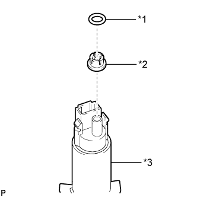
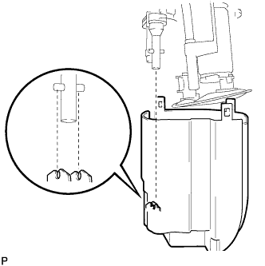
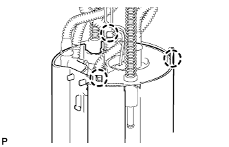
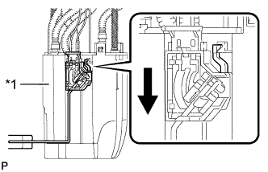

ТОПЛИВНЫЙ НАСОС (для моделей с двойным топливным баком) > ПОВТОРНАЯ СБОРКА |
| 1. УСТАНОВИТЕ ТОПЛИВНЫЙ НАСОС |
|  |
Установите распорную втулку топливного насоса и новое кольцевое уплотнение на топливный насос.
| *1 | Кольцевое уплотнение |
| *2 | Распорная втулка топливного насоса |
| *3 | Топливный насос |
Нанесите на кольцевое уплотнение топливного насоса тонкий слой дизельного топлива.
Установите топливный насос в пластину топливозаборника.
| 2. ПОДСОЕДИНИТЕ ЭЖЕКТОР |
|  |
Установите эжектор в расширительный топливный бачок № 1. Затем сдвиньте эжектор вниз, чтобы установить его.
| 3. УСТАНОВИТЕ ЖГУТ ПРОВОДОВ ТОПЛИВНОГО НАСОСА |
Подсоедините разъем жгута проводов топливного насоса к пластине топливозаборника.
Подсоедините разъем жгута проводов топливного насоса к топливному насосу.
| 4. УСТАНОВИТЕ ПЛАСТИНУ ТОПЛИВОЗАБОРНИКА В СБОРЕ |
|  |
Вставьте 3 захвата в отверстия, чтобы установить пластину топливозаборника.
| 5. УСТАНОВИТЕ ДАТЧИК УРОВНЯ ТОПЛИВА В СБОРЕ |
|  |
Установите датчик уровня топлива на расширительный топливный бачок. Затем сдвиньте датчик уровня топлива вниз, чтобы установить его.
| *1 | Расширительный топливный бачок |
 | Сдвиньте |
Подсоедините разъем датчика уровня топлива.